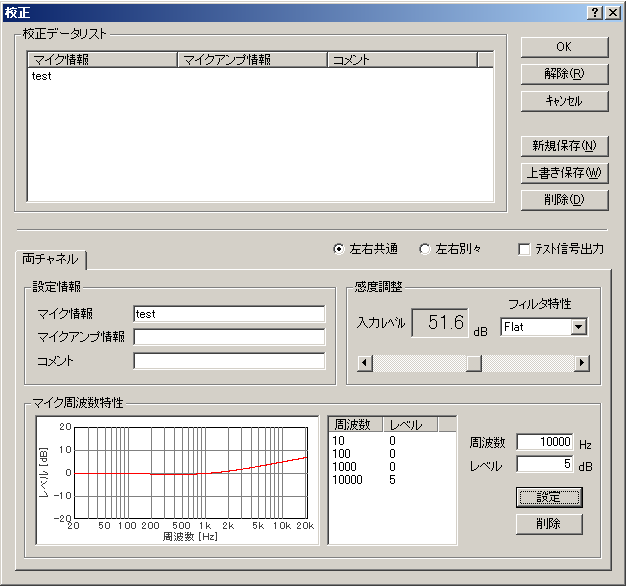

DSSF3 > RA > 操作マニュアル > 騒音計として使用するためのマイク校正方法
マイクの周波数特性を補正する
スピーカーや、アンプなどの周波数特性を測定する場合、マイクに周波数特性表が付属している場合は、校正情報を登録できます。
マイクの周波数特性が付属の特性表でわかっている場合は、その周波数特性を補正することが可能です。騒音値の校正は、特に問題ありませんが、周波数特性の修正は注意が必要です。マイクの周波数特性は、すでにメーカーなどで、総合的に最善に調整されているためです。このときの総合的とは、周波数特性と応答性（スピード）です。
もともと、人間の耳は、低域や、高域で、極端に感度が悪くなります。そのため、マイクやスピーカーなどを設計するときは、周波数特性よりも、音楽が自然に聞こえるスピードを優先して設計しています。
これは音響信号の周波数成分を重視するか、中に含まれる情報を重視するかという基本的な選択です。現代では、音響信号を分析する場合、周波数のみよりは、トータルな情報（音圧レベルの時間的変化、時間情報、自己相関、相互相関）を重視するほうが重要です。特に周波数特性の補正は、位相特性の補正も必要で、一口ではいえない問題があります。
一般的なマイクに求める性能は、実際人間の耳に聞こえる音を精密に取り込む能力です。通常のデジタル対応のマイクであれば充分です。現在の測定では、マイクもスピーカーもハイファイになればなるほど周波数特性よりもリニアリティとしてのスピードのほうが、はるかに重要です。
それに比べて、測定用マイクは、ピンクノイズやM系列信号の一定音量の信号を使用して測定するため、周波数特性を第一に設計されています。また、低域を重視すると、高域が悪くなり、高域を重視すると、低域が犠牲になります。
測定用マイクを使用して、さらに総合的に周波数特性をそろえるための調整が必要です。本来この目的に補正は作られています。測定用マイクは、そもそも性能がよく、マイク補正が可能であり、マイク補正して使用すべきマイクです。マイクのみでフラットであっても、マイクアンプ、リアルタイムアナライザとの接続まで含めて、フラットでなければならないので、マイクは補正の余地を残して設計されています。音圧レベルや、周波数特性の補正は当然です。そのために、マイクメーカーは細かな特性表を用意しています。
そのため、特に必要がなければ、普通の音楽録音用マイクでの周波数特性の補正はしないほうが無難です。
この場合、必要があるというのは、周波数特性を視覚上フラットにしたい場合です。また、スピーカーなどの周波数特性をプリントする場合です。その場合、マイクやサウンド回路の特性が入ってしまっては見づらいので、補正をします。以下の手順に従って周波数カーブを作成し、マイク校正情報を保存してください。
- FFTアナライザを開いて[校正]ボタンをクリックします。
- 校正ダイアログが開きます。ここでマイク情報の登録、選択などを行い、[編集]ボタンをクリックします。
- 編集画面が開きます。そこで、周波数とレベルの欄から10000を選択し、右にあるレベルのボックスに5(dB)と入力して[設定]ボタンをクリックすると、下の画面のように周波数カーブが上を向きます。あらかじめ登録されている周波数は10、100、1000、10000Hzの4つですが、新たに周波数を追加することも可能です。その場合は周波数のボックスに追加する周波数を入力し、そのレベルも入力して設定ボタンをクリックしてください。

- マイクに周波数特性表を見て、特性カーブが同じになるように周波数とレベルを入力してマイク補正情報として保存してください。これで、次回の測定からはマイクの特性を補正してフラットな周波数特性が得られるようになります。
- 新規に登録する場合は、マイク情報、マイクアンプ情報、コメントを入力し、[新規保存]ボタンをクリックして登録します。既に登録してあるマイクの情報を編集した時は[上書き保存]をクリックしてください。次回からは、使用するマイク情報をダブルクリックすることで、その校正情報を使用することができます。
DSSF3 > RA > 操作マニュアル > 騒音計として使用するためのマイク校正方法